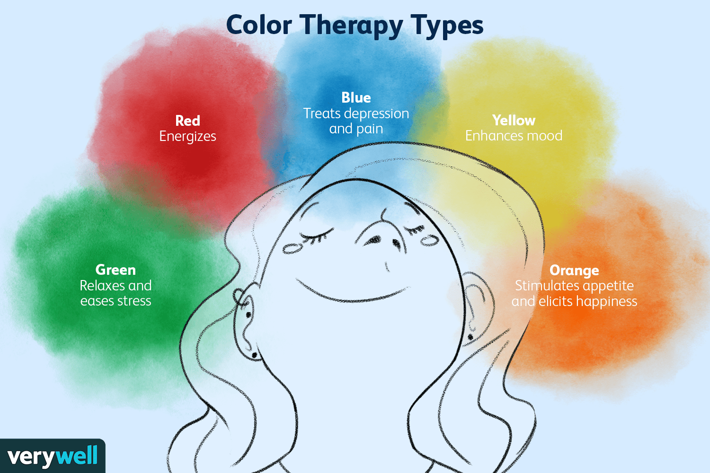

|
What Is Color Therapy? Types of Color Therapy. What Color Therapy Can Help With |
 |
|---|---|
What Is Color Therapy?Color Therapy, also known as chromotherapy,is from of therapy that uses color and light to treat certain mental and physical health condition. We can trace this from of therapy back to the acinet Egypians. They made us use of sun- filled room with colored glasses for therapcutic purposes. Types Of Color Therapy?In color therapy , different colors are thought to be able to treat various conditions. Color therapists believe that a lack of particular color in your body might be responsible for your living conditon. Here's a list of the most common color used during color therapy and how we can used them.
What Color Therapy Can Help WithColor therapy has a host of uses. There's soe evidence to suggest thatit can help with some of the following conditions.
|